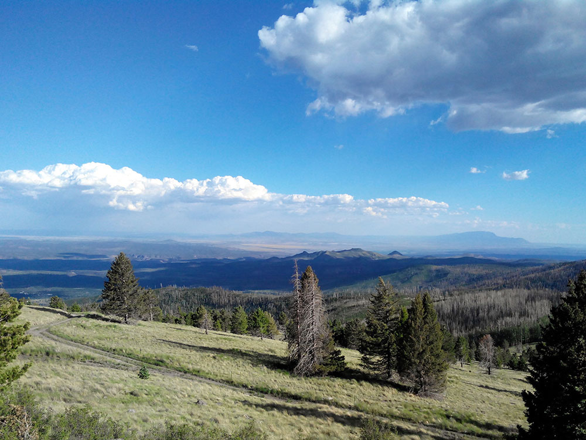
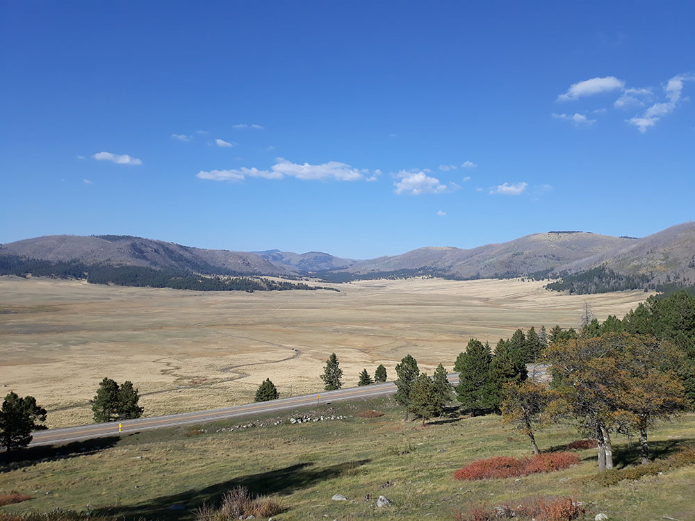
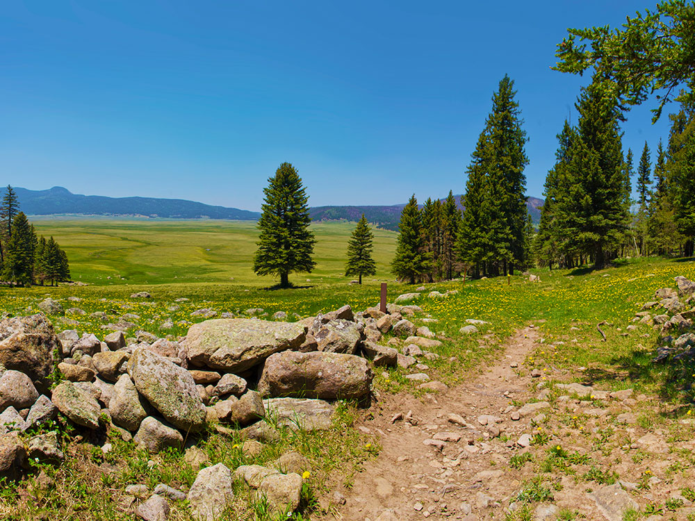
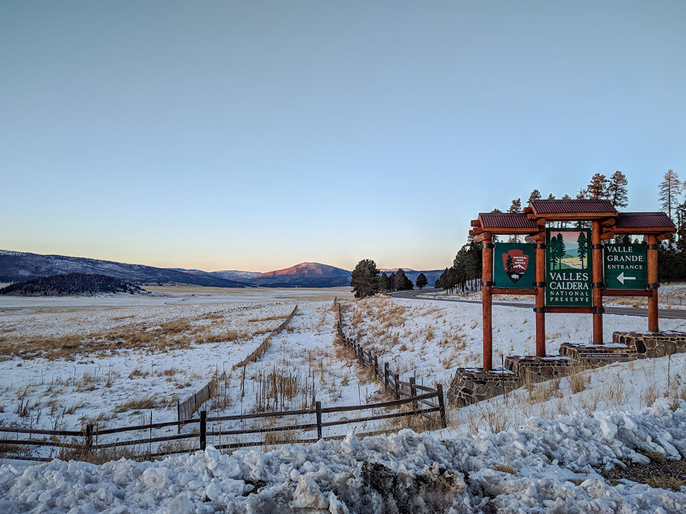
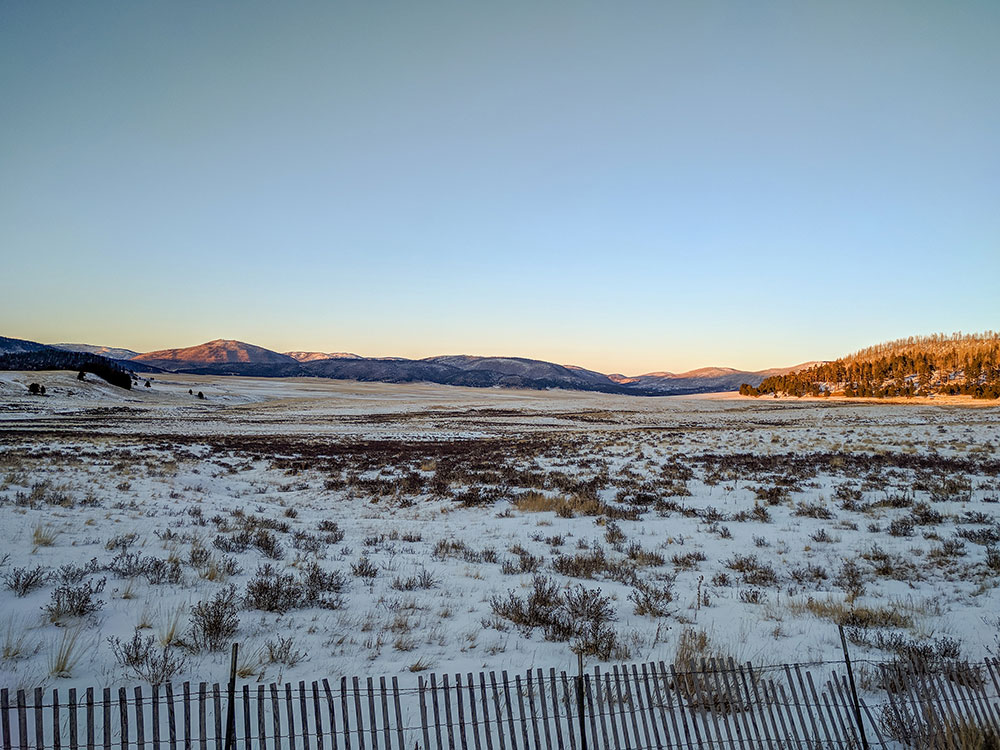

.jpg){kind=link}
13.7-mile wide volcanic caldera in the Jemez Mountains of northern New Mexico, with hot springs, streams, fumaroles, natural gas seeps and volcanic domes dotting the caldera floor landscape
General Information
Vehicle access typically: 9:00am to 5:00pm (extended summer hours possible)
Visitor facilities: 9:00am to 5:00pm
Closed Thanksgiving, Christmas Day, and New Year’s Day
Motorcycle: $20
Per person (walk-in/bike): $15
Children under 16: Free
How to Get There
From Los Alamos (36 mi): Take NM-501 west to NM-4, then follow NM-4 through the Jemez Mountains for approximately 18 miles until reaching the main entrance along Highway 4.
Overview
Valles Caldera National Preserve protects a vast volcanic crater in the Jemez Mountains of northern New Mexico, formed by massive eruptions about 1.25 million years ago. The caldera is about 13.7 miles wide and holds broad grass valleys, forested domes, streams, hot springs and the 11,253-foot resurgent dome of Redondo Peak. The roughly 89,000-acre preserve was a private cattle ranch for generations, was acquired by the federal government in 2000, and became a unit of the National Park System in 2015. It is also a National Natural Landmark, and its open meadows are known for large elk herds and wildflowers. Visitors come for photography at the Valle Grande, hiking and mountain biking, fishing, winter snowshoeing and cross-country skiing, and to experience a landscape that feels more like Montana than the desert Southwest.
Access
The preserve is on NM-4 in the Jemez Mountains, about 40 minutes from Los Alamos, roughly 1.5 hours from Santa Fe and about 1.5 to 2 hours from Albuquerque. Nearly all visitors arrive by car, and the main entrance along the paved highway leads to the Valle Grande staging area. The Valle Grande can be seen directly from the road, while most trails start from trailheads off NM-4 and some require a drive on unpaved roads. Cell service is limited, so download maps before you go.
Seasons
The preserve is open year-round, with summer and early fall the best times for hiking and wildlife viewing, when the meadows are green and wildflowers bloom. September and October bring golden aspens and the elk rut, when the bugling of bull elk can be heard across the valleys. Winter turns the caldera into a snowshoeing and cross-country skiing destination, though snow and ice can make NM-4 and some roads difficult. Afternoon thunderstorms are common in July and August, and some roads and trails can close in winter or during wet conditions.
Things to Do
Explore the Ancient Volcanic Landscape
Valles Caldera National Preserve is a huge, high-elevation caldera with grassland valleys ringed by forested peaks. The scale of the landscape is best appreciated from the Valle Grande overlooks and by getting out on foot or bike.
View the Valle Grande
The Valle Grande is the largest and most accessible meadow in the caldera and the preserve's most iconic scene. The paved highway provides sweeping views of the grasslands and surrounding domes, and it is a popular stop for sunrise and sunset photography.
Go Hiking, Mountain Biking and Fishing
The preserve has more than two dozen trails for hiking and biking, ranging from easy meadow walks to longer backcountry routes. Fishing is permitted on parts of the East Fork of the Jemez River with a New Mexico license.
Watch Elk and Other Wildlife
The preserve is home to a large elk herd, along with mule deer, coyotes, hawks and many other species. Dawn and dusk are the best times to see wildlife in the open meadows.
Snowshoe and Ski in Winter
When snow covers the caldera, visitors can snowshoe or cross-country ski through quiet meadows and forest. Winter conditions change quickly, so check road and trail conditions before visiting.
Top Trails
Valle Grande Trail
Length: Approximately 3 miles round trip
Elevation Gain: Minimal to moderate
Difficulty: Easy to Moderate
This trail begins near the Valle Grande staging area and crosses the open meadow with wide views of the caldera. It is a popular choice for wildlife viewing and photography.
Coyote Call Trail
Length: Approximately 3.5 miles round trip
Elevation Gain: Moderate
Difficulty: Moderate
This route winds through meadows and forest along a ridge, with views of the Valle Grande and Redondo Peak. It is popular with hikers and mountain bikers and is a good option for those wanting something longer than the meadow walks.
Cerro la Jara Trail
Length: Approximately 4 miles round trip
Elevation Gain: Moderate
Difficulty: Moderate
This hike climbs a forested dome and rewards visitors with panoramic views across the caldera. It is a good choice for those who want a more rewarding climb with fewer people.
Visitor Centers
The Valles Caldera Visitor Center near the Valle Grande staging area on NM-4 is the main orientation point for the preserve. Inside are exhibits explaining the volcanic formation of the caldera and its ecology and cultural history, a park film, maps, restrooms and a bookstore, and rangers can provide current trail and road conditions. The center is open seasonally with reduced hours in winter, so check the National Park Service website for current times and for ranger programs and guided tours.
Camping and Lodging
There are no campgrounds or lodging inside the preserve, and overnight camping is not allowed. Nearby camping is available at national forest campgrounds in the Jemez Mountains such as Jemez Falls and Redondo, and at Bandelier National Monument's Juniper Campground. Lodging, restaurants and hot springs are in Jemez Springs, about 30 minutes away, and in Los Alamos, about 40 minutes away. Santa Fe and Albuquerque offer the widest selection of hotels and are 1.5 to 2 hours away. Check each property's website for current availability.
This article uses material from the Wikipedia article "Valles Caldera", which is released under the Creative Commons Attribution-Share-Alike License 3.0 Additional information from National Park Service pages for Basic Information, Operating Hours & Seasons and Fees & Passes, Visit Los Alamos and Planet Whitley.

_at_Valles_Calderas_National_Preserve_from_Pajarito_Mountain,_backside_of_Ski_area,_Los_Alamos,_NM_-_panoramio.jpg){kind=link}



.jpg){kind=link}

.jpg){kind=link}

.jpg){kind=link}